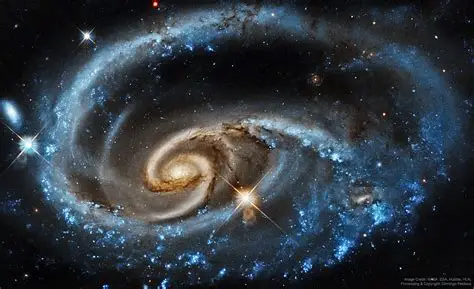

Galaxies consist of stars, planets, and vast clouds of gas and dust, all bound together by gravity. The largest contain trillions of stars and can be more than a million light-years across. The smallest can contain a few thousand stars and span just a few hundred light-years. Most large galaxies have supermassive black holes at their centers, some with billions of times the Sun’s mass.Galaxies come in a variety of shapes, mostly spirals and ellipticals, as well as those with less orderly appearances, usually dubbed irregular. Most galaxies are between 10 billion and 13.6 billion years old. Some are almost as old as the universe itself, which formed around 13.8 billion years ago. Astronomers think the youngest known galaxy formed approximately 500 million years ago. Galaxies can organize into groups of about 100 or fewer members held together by their mutual gravity. Larger structures, called clusters, may contain thousands of galaxies. Groups and clusters can be arranged in superclusters, which are not gravitationally bound. Superclusters, empty voids, “walls” of galaxies, and other large-scale structures make up the cosmic web of matter in the universe.